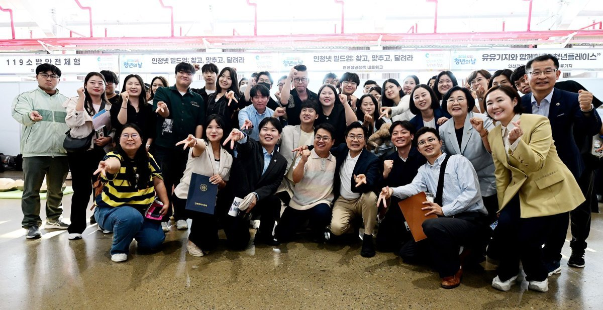

인천 내년 청년예산, 금액 적힌 13개 사업 223억원 중 58%가 월세
쉬는 청년 50명 「갭이어」·AI 면접 300명 신설…「평균 연봉 5000만원」 첫해 계획
AI경제저널=김갑봉 기자 | 인천시가 내년 청년정책 계획을 10일 내놨다. 진로를 정하지 못했거나 구직을 멈춘 청년 50명을 위한 '청년 미래찾기'와 인공지능(AI) 면접 지원이 새로 생긴다. 민선9기 공약 '임기 내 평균 연봉 5000만원'을 위한 첫해 계획이라고 시는 밝혔다.

쉬는 청년부터 재직 청년까지
'인천 청년 미래찾기'는 인천형 청년 갭이어(Gap Year) 시범사업이다. 청년 50명이 진로탐색 프로그램을 듣고 스스로 짠 프로젝트를 실행한다.
시는 '쉬었음' 청년과 장기 미취업 청년의 참여를 적극 지원한다고 밝혔다. 예산은 2억5000만원이다.
구직을 단념했거나 자립을 준비하는 청년 240명은 청년도전지원사업으로 심층상담과 참여수당을 받는다. 청년공간 유유기지에는 AI 모의면접 전용공간이 생기고, 취업준비 청년 300명이 AI 면접 컨설팅을 받는다.
미취업 청년 80명은 청년도약기지에서 3개월 직무교육을 받고 3개월 기업 인턴십으로 잇는다.
미취업 청년 360명은 드림체크카드로 월 50만원씩 최대 6개월 구직활동수당을 받는다. 청년 5000명은 어학·자격증 응시료를 연 1회 최대 10만원 지원받는다.
취업 뒤 지원은 자산과 주거다. 재직청년 300명이 '드림For청년통장'에 새로 들어간다. 3년간 매달 10만원, 모두 360만원을 모으면 시가 같은 금액을 보태 720만원이 된다.
부모와 따로 사는 18~39세 무주택 청년은 월 최대 20만원씩 최대 24회 월세를 받는다. 35~39세는 인천형 청년월세 사업으로 받는다. 다른 시·도에서 인천으로 온 청년 1인가구 1000명에게는 5만원 상당 웰컴키트를 준다.
내년 청년예산이 인천에 말하는 것
시 붙임 자료에서 짚을 것은 네 가지다.
첫째, 금액이 적힌 13개 사업을 더하면 223억2000만원이다(AI경제저널 계산). 이 가운데 청년월세 두 사업이 129억원으로 57.8%다. 재직청년 통장 43억원을 더하면 77.1%가 월세와 자산형성에 간다.
월세 122억원과 통장 43억원은 시가 지난 5일 시의회에 낸 2027년 예산안에도 같은 액수로 잡혔다. 13개 사업 223억2000만원은 시 2027년 예산안 15조9000억원의 0.14%다(AI경제저널 계산).
둘째, 시는 이번 계획을 「평균 연봉 5000만원」 공약 이행의 시동이라고 밝혔다. 붙임의 「미래산업과 연계한 청년 인재 육성 및 일자리 기회 확대」 항목에서 금액이 적힌 사업은 청년도약기지(8억원), AI 면접(1억원), 대학일자리플러스센터(4억원)다. 셋을 합하면 13억원으로 13개 사업의 5.8%다(AI경제저널 계산). 붙임에 임금을 직접 올리는 사업은 없다.
셋째, 시는 취업 준비 청년에서 진로를 정하지 못했거나 구직을 멈춘 청년까지 지원 범위를 넓힌다고 밝혔다. 첫해 미래찾기 규모는 50명, 청년도전지원은 240명이다.
넷째, 시는 2027년 인천 청년재단 설립 행정절차를 밟는다. 상반기 행정안전부 사전협의, 하반기 타당성 검토 순이다. 청년기금은 하반기에 운용계획을 짜고 조례를 만든다. 기금 규모와 재원은 검토 단계다.
박찬대 인천시장은 "평균 연봉 5000만원이라는 목표는 인천에서 일하는 시민들이 더 나은 소득과 삶의 기회를 누릴 수 있도록 하겠다는 약속"이라고 말했다.
참고문헌
- 인천광역시 청년정책담당관(2026). 좋은 일자리에서 안정된 삶까지…인천, 청년이 머무는 도시로(보도자료, 붙임 「2027년 인천시 청년정책 추진방향 및 주요사업」 포함). 2026년 11월 10일. https://www.incheon.go.kr/IC010205/view?repSeq=DOM_0000000015937664
- 인천광역시 예산담당관(2026). 인천시, 2027년 예산안 15조 9000억원 편성, 민생 지키고 인천 제값 찾는다(보도자료). 2026년 11월 5일. https://www.incheon.go.kr/IC010205/view?repSeq=DOM_0000000015900573
[사진 출처]
- [사진1] 인천광역시 보도자료 「좋은 일자리에서 안정된 삶까지…인천, 청년이 머무는 도시로」(2026.11.10) 붙임 사진 https://www.incheon.go.kr/IC010205/view?repSeq=DOM_0000000015937664
관련기사
- [인천경제&경제사③] 관세는 빚 담보로, 쌀은 인천 부두로… 개항기 인천의 두 길
- 인천 전셋값 올해 4.71% 상승, 집값의 여섯 배
- [인천경제&경제사②] 1883년 인천 개항장, 관세권은 일부 회복, 조계 땅은 「영구히」 조차
저작권자 © AI경제저널 무단전재 및 재배포, AI학습 및 활용 금지